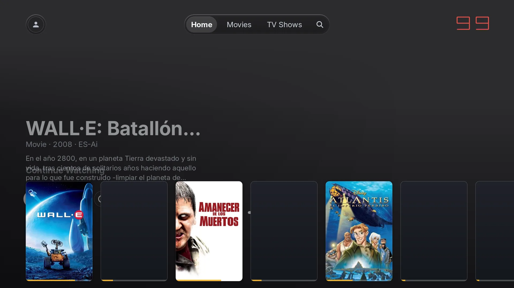
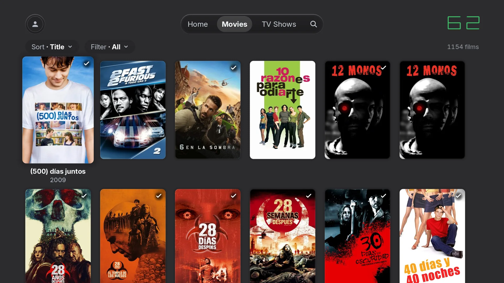
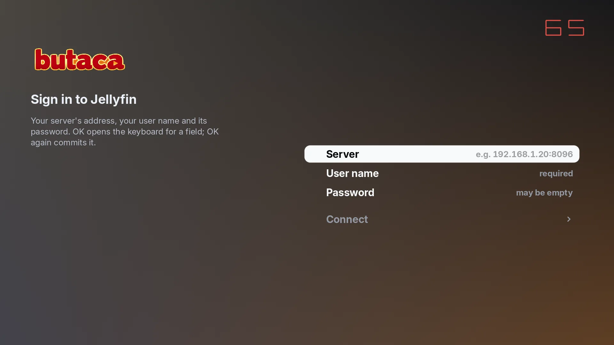

60 fps, medidos, no prometidos
La interfaz se dibuja en la GPU del televisor. Escenas de regresión miden la tasa de fotogramas en la TV real, no en un portátil de desarrollo.
Cliente nativo de Jellyfin para LG webOS - escrito en Rust
Una butaca donde sentarte a ver lo que tengas en tu servidor. Sin Chromium, sin JavaScript, sin web view: la interfaz se dibuja en la GPU y el vídeo lo decodifica el hardware de la TV.
En desarrollo - aún sin instalador público

Escena 01
Las LG con webOS 5.x y anteriores traen un Chromium viejo y lento, y las apps web oficiales cargan con ese lastre. Butaca retira el navegador de la ecuación: habla directamente con el sistema de la tele.
Renderizada por un navegador de hace años: tirones, esperas y una tele que se siente vieja.
Dibujada directo en la GPU: 60 fps estables, medidos en el televisor real con escenas de regresión.
Decodificación limitada por el motor web y sus capas de compatibilidad.
H.264 y HEVC pasan por el pipeline de vídeo nativo: los decodifica el hardware del SoC de la TV.
Chromium, más JavaScript, más una web view entre tú y la película.
Rust. Sin Chromium, sin JavaScript, sin web view. El navegador se queda fuera de la sala.
Modelos recientes, con navegadores modernos que muchas teles nunca recibirán.
webOS 5.x y anteriores: los televisores que el software web dejó atrás.
Escena 02
Nada de promesas de marketing: cada ventaja está implementada, medida o probada contra el hardware real.
La interfaz se dibuja en la GPU del televisor. Escenas de regresión miden la tasa de fotogramas en la TV real, no en un portátil de desarrollo.
El vídeo lo decodifica el hardware de la TV a través de su pipeline nativo. Sin transcodificación innecesaria y sin calentar el servidor.
La reanudación con salto funciona incluso cuando el servidor está transcodificando. Cierras a mitad de película y vuelves al segundo exacto.
URL del servidor, usuario y contraseña con el teclado en pantalla. Sin apps auxiliares ni configuración previa desde otro dispositivo.
Navegación, página de detalle, perfiles y búsqueda, todo contra la API de Jellyfin y pensado para manejarse con el mando.
Compatible con ambas líneas del servidor, autenticando con la cabecera estándar Authorization: MediaBrowser.
Cuando algo falla, la pantalla de error nombra tu modelo de TV. Depurar deja de ser una adivinanza; la condición de carrera del decodificador, corregida.
Los informes de fallos son opt-in, piden consentimiento explícito y los logs viajan redactados. Tus datos se quedan en tu casa.
Escena 03
Capturas del build de simulación contra un servidor Jellyfin real; en la tele, esta misma interfaz se dibuja por GPU a 1080p nativo.


Escena 04
Infraestructura de i18n y primera traducción completa: la interfaz aprende idiomas, empezando por el español.
El paso que falta para el primer .ipk: experiencia de primer arranque y empaquetado listo para instalar en la TV.
Un servicio propio para los informes de fallos opt-in, con consentimiento y logs redactados de principio a fin.
Iconografía propia, a la altura del resto de la interfaz. Los detalles también se proyectan en pantalla grande.
Escena 05
Lo que suele preguntarse antes de instalar algo en la tele.
Un cliente nativo de Jellyfin para televisores LG webOS: la interfaz se dibuja en la GPU de la tele y el vídeo lo decodifica su hardware, sin Chromium ni web view por medio.
Está pensado para televisores LG con webOS 5.x y anteriores, los modelos que el software web ha ido dejando atrás.
Nada. Es software libre bajo licencia MIT, sin cuentas, sin telemetría escondida y sin versiones de pago.
Sí. Butaca es solo el cliente: necesitas tu propio servidor Jellyfin 10.x o 12.x al que la televisión se conecta.
Todavía no hay un .ipk público: falta resolver el issue #2. El progreso es público en GitHub y puedes seguirlo.
Escena 06
MIT
Butaca es 100% software libre, publicado bajo la licencia MIT: puedes usarlo, estudiarlo, modificarlo y compartirlo, también con cambios, conservando el aviso de copyright.
El código completo - la app y esta misma página - está en el repositorio. Sin versiones «pro», sin telemetría escondida, sin letra pequeña.
Butaca es un fork de plx-native, MIT © Gleb Linnik; los cambios de Butaca se publican bajo la misma licencia MIT.
Butaca es un fork de plx-native, el cliente nativo de Plex para webOS creado por Gleb Linnik, y sigue su línea v0.6.5 cambiando el backend de Plex por Jellyfin. Este proyecto no existiría sin su trabajo: gracias.
Butaca es un cliente no oficial. Jellyfin, LG y webOS son marcas de sus respectivos propietarios.